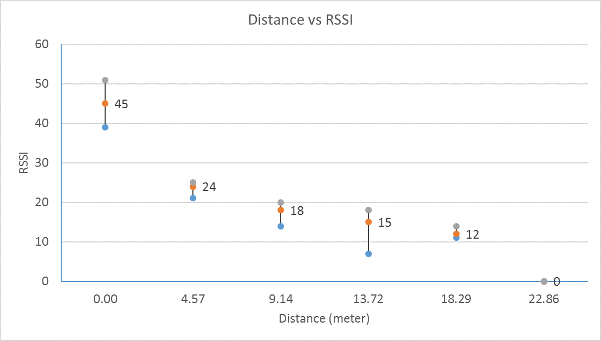

| Yard | Meter | Min | Max | Ave. |
| 0 | 0 | 39 | 51 | 45 |
| 5 | 4.57 | 21 | 25 | 24 |
| 10 | 9.14 | 14 | 20 | 18 |
| 15 | 13.72 | 7 | 18 | 15 |
| 20 | 18.29 | 11 | 14 | 12 |
| 25 | 22.86 | 0 | 0 | 0 |

Path loss exponent is given by: \[L=10n\log_{10}d+C\]
\(L\): path loss
\(n\): path loss exponent
\(d\): distance in meters
\(C\): system constant
From two different data points: \[(L2-L1)=10n\log_{10}(d2/d1) \Rightarrow n=(L2-L1)/(10\log_{10}(d2/d1))\]
As RSSI is linearly related to path loss \[(L2-L1)=(RSSI2-RSSI1)\]
Fix \(d1=4.57\), \(L1=24\) and get the estimation as Tab.[tab:pathloss]:
| \(d2\) | \(L2\) | \(n\) |
|---|---|---|
| 9.14 | 18 | -1.993 |
| 13.72 | 15 | -1.885 |
| 18.29 | 12 | -1.992 |
| 22.86 | 0 | -3.433 (invalid) |
Because we cannot get RSSI value when \(d2=22.86\), we cannot trust this measurement that just represents the margin of the signal coverage. Therefore, the estimated Path Loss Exponent is: \[\mathbb{E}[n]=\frac{-1.993-1.885-1.992}{3}=-1.957\] \[Var[n]=\frac{(1.957-1.993)^2+(1.957-1.885)^2+(1.957-1.992)^2}{3}=0.0039\] \[\sigma=\sqrt{Var[n]}=0.0621\]
Because the task1 and task2 are released every 1s and 2s, we can directly get their response time from the nanosecond part, and thus easily get the worst-case response time as below:
Case 1:
Task1: 601562808
Task2: 299804841
Case 2:
Task1: 298828278
Task2: 601562808
For case1, because task1 has lower priority, it will be preempted by task2 every 2 seconds; therefore, the response time of task1 is not stable. For case2, because task1 has higher priority, it will not be preempted by task2; therefore, the response time of task1 is stable.
For task2, because its period interval is longer than task1’s, and they form a harmonized taskset; therefore, task2’s response time is stable for both cases.
Comparing the worst-case response time of task1 and task2 from two cases, we found that the task with higher priority will have smaller worst-case response time.
From the experiment, we know that if task1 with shorter period interval has higher priority, both tasks can have stable response time; therefore, our method is first to use the RMS(Rate-monotonic scheduling) to assign the priority to each task, and then assign each task’s reserve budget equals to its worst-case response time.